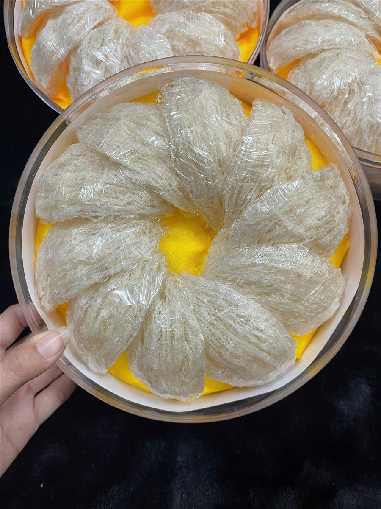
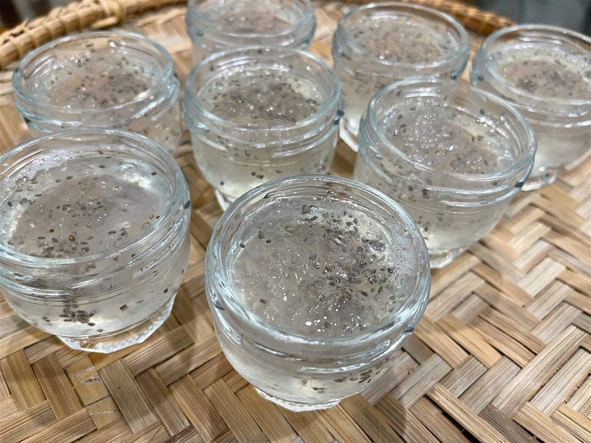

Chưng Yến Cách Thủy Bao Lâu? Thời Gian Ngâm, Chưng Cho Từng Loại Yến
Yến Sào Lanest · Đăng ngày 22/10/2026

Hỏi người làm nghề yến cách nấu yến ngon, câu trả lời gần như luôn giống nhau: chưng yến cách thủy, lửa nhỏ, đừng vội. Cái khó là mỗi loại yến cần thời gian ngâm khác nhau, và chỉ cần ngâm quá tay hay chưng quá lâu là sợi yến nát. Bài này gom lại các mốc thời gian Lanest đang hướng dẫn khách, theo từng loại yến, kèm dụng cụ và những lỗi hay gặp.
Tổ yến tinh chế đắp hình hoa, mỗi lần chưng lấy một tổ ra ngâm
1. Vì sao phải chưng cách thủy?
Chưng cách thủy là đặt thố hoặc hũ đựng yến vào nồi nước, để hơi nóng của nước làm chín yến từ từ. Cả ba tài liệu hướng dẫn của Lanest đều thống nhất một điều: tránh đun sôi trực tiếp, chưng lửa nhỏ, nước không sôi mạnh. Yến là sợi mảnh, gặp nhiệt mạnh và lâu sẽ tan, mất độ sợi, chén yến thành nước.
Nhiều người hỏi Lanest có nên chưng bằng nồi cơm điện hay lò vi sóng cho nhanh. Thật lòng, Lanest chưa thử nghiệm và chưa có hướng dẫn cho hai cách này, nên không khuyên dùng. Nguyên tắc Lanest giữ là: nhiệt nhẹ, đều, kiểm soát được thời gian. Cách thủy trên bếp là cách đáp ứng được cả ba.
2. Ngâm yến bao lâu cho từng loại?
Ngâm là bước quyết định sợi yến có giữ được hay không. Luôn ngâm bằng nước lạnh, nước sạch, không dùng nước ấm hay nước nóng.
| Loại yến | Thời gian ngâm | Ghi chú |
| Yến tinh chế vụn | Khoảng 10 phút | Sợi vụn nở rất nhanh |
| Yến tinh chế sợi | Khoảng 30–40 phút | Ngâm tới khi yến nở đều, mềm |
| Chân yến tinh chế | Khoảng 30–45 phút | Phần chân dày, cần lâu hơn |
| Yến chia viên sấy khô | Khoảng 20–40 phút | Theo hướng dẫn trên sản phẩm |
| Tổ yến thô | Khoảng 1–2 giờ | Sau đó phải tự nhặt lông, tạp chất |
Nước ngâm có thể giữ lại để chưng, hoặc lọc bỏ nếu muốn vị nhẹ hơn. Ngâm vừa đủ là được, đừng nghĩ ngâm lâu thì yến nở nhiều hơn. Trong một buổi họp đội ở Lanest, có bạn kể ngâm một mẻ yến gần cả ngày, người sáng lập Lanest phản ứng ngay vì đó là chuyện "thuộc về kỹ năng", ngâm quá lâu thì sợi bở.
3. Dụng cụ cần chuẩn bị
- Thố sứ hoặc hũ thủy tinh chịu nhiệt có nắp: giữ nhiệt tốt, không phản ứng với thực phẩm.
- Nồi chưng cách thủy hoặc một nồi đủ sâu để đặt thố vào, nước bên ngoài không sôi mạnh.
- Đường phèn hoặc đường thốt nốt, và nguyên liệu kèm nếu thích: táo đỏ, kỷ tử, hạt sen, vài lát gừng để khử tanh.
4. Chưng bao lâu là chín?
- Cho yến đã ngâm vào thố, thêm nước vừa ngập yến, không đổ quá đầy.
- Đậy nắp thố, đặt vào nồi nước, chưng lửa nhỏ khoảng 20–30 phút. Với món có táo đỏ, có thể cho táo và nước vào chưng trước khoảng 10 phút rồi mới cho yến vào chưng thêm 20–25 phút.
- Yến chín khi nước có bọt tăm nhẹ và sợi yến nổi lên trên.
- Khoảng 5 phút trước khi tắt bếp mới cho đường, khuấy nhẹ. Hoặc nấu nước đường riêng rồi rót vào sau.
Cẩm nang tổng quan của Lanest ghi mốc ngắn hơn (ngâm 15–30 phút, chưng 15–20 phút). Lần đầu chưng, anh chị cứ canh từ mốc ngắn, xem sợi yến đã trong và mềm chưa rồi mới thêm thời gian. Thiếu thì chưng thêm được, quá tay thì không cứu được.

Yến đã chưng xong, chia vào hũ thủy tinh, sợi yến trong và còn nguyên sợi
5. Những lỗi làm chén yến nát, mất sợi
- Ngâm bằng nước ấm hoặc nóng.
- Ngâm quá lâu, yến bở trước khi kịp chưng.
- Đun sôi trực tiếp, hoặc để lửa to cho nhanh.
- Chưng quá thời gian, yến tan thành nước.
- Cho đường quá sớm. Người cần hạn chế đường thì giảm hoặc bỏ đường.
Với yến thô, đừng quên bước nhặt lông sau khi ngâm, vì yến thô chỉ được làm sạch nhẹ bên ngoài. Nếu muốn khỏi nhặt, chọn yến tinh chế. Bài tổ yến thô và yến tinh chế giải thích kỹ hai loại này.
6. Chưng xong để được bao lâu?
Yến tự chưng nên ăn ngay khi còn ấm, hoặc để nguội rồi cất ngăn mát và dùng trong 1–2 ngày. Vì vậy mỗi lần nên chưng vừa đủ cho 1–2 ngày. Người trưởng thành mỗi lần dùng khoảng 5–10g yến khô; trẻ từ 1 tuổi dùng ít hơn, xem bài hướng dẫn dùng yến đúng cách.
Yến hũ chưng sẵn của Lanest thì đã chín, dùng ngay được; ai thích ăn ấm có thể chưng cách thủy lại hũ. Muốn so sánh hai cách, xem bài yến hũ chưng sẵn hay tự chưng.
Câu hỏi thường gặp
Có chưng yến bằng nồi cơm điện được không?
Lanest chưa có thử nghiệm hay hướng dẫn cho cách này nên không khuyên dùng. Cách Lanest hướng dẫn là chưng cách thủy lửa nhỏ, để kiểm soát được nhiệt và thời gian.
Chưng yến bao lâu thì chín?
Khoảng 20–30 phút lửa nhỏ, tùy lượng yến. Khi nước có bọt tăm nhẹ và yến nổi lên là chín.
Có cần ngâm yến tinh chế không?
Có. Yến tinh chế đã sạch lông nhưng vẫn là yến khô, cần ngâm nước lạnh cho nở mềm, từ khoảng 10 phút với yến vụn đến 30–45 phút với chân yến.